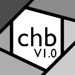

Chromebrew
Build Version:
1.0
Free and open source homebrew tools for Chromebooks.
Chromebrew activity cannot be tracked, just
don't be seen using it and don't tell anyone who made it.
Tools
Incognito Bypass
